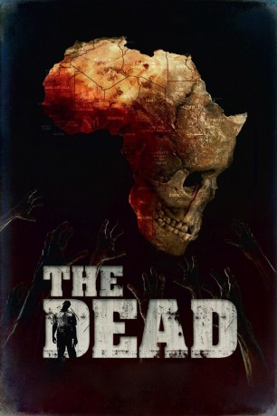

#6386 The Dead
 
 IMDB-Wertung: 5.8 / 10
IMDB-Wertung: 5.8 / 10  Metascore: 0
Metascore: 0 
Lt. Brian Murphy ist Amerikaner und als Söldner in Afrika gestrandet. Er hat einen Flugzeugabsturz überlebt, nur um sich inmitten eines Landes wiederzufinden, das von Zombies überrannt wird. Oberstes Ziel des Amerikaners ist, das Land so schnell wie möglich zu verlassen. Doch das kann ihm nur mit Hilfe des desertierten Soldaten Daniel Dembele gelingen. Aber damit dieser ihm hilft, muss Murphy dem Afrikaner bei der Suche nach seinem verschwundenen Sohn beistehen - während das Sterben inmitten der Zombie-Horden immer mehr um sich greift...
Jahr: 2010
Dauer: 104 Minuten
FSK: 18
Land: England Studio: UKTonspuren: DTS - ,
Untertitel: Deutsch,
Auflösung: 1080p (1920x1080) Größe: 10547 MB
Genre: Horror
Regisseur: Howard J. Ford, Jonathan Ford
Drehbuch: Howard J. Ford
Soundtrack:
Darsteller:
- Rob Freeman als Lieutenant Brian Murphy
- Prince David Oseia als Sergeant Daniel Dembele
- Laura Jane Stephens als Drowning Woman
- David Dontoh als The Chief
- Ben Crowe als Dan Ryder - Mercenary Leader
- Glenn Salvage als Suicide Mercenary
- Dan Morgan als James
- Julia Scott-Russell als James' Fiancé
- John Dunton-Downer als Lieutenant Frank Greaves
- Nelson E. Ward als Captain Edward Roy Cottridge Parker
- Mark Chapman als Co-Pilot Collins
- Anne Davaud als Doctor
- Gaal Hama als Daniel's Son
- Leala Tall als Daniel's Wife
- Tolu Ajayi als Major Mayhem
- Garard Ouadraogo als Lead Soldier
- Josaphine Kabora als Dying Woman
- Halimata Nikiama als Woman with Baby
- Reine Pauline Tangolo als Baby
- Katy Richardson als Murphy's Wife
- Fae Ford-Brister als Murphy's Daughter
- Sergho Dak Jean Gustaphe als Military Base Leader
- Kerry Moallemi als Mother on Plane
- Kian Moallemi als Baby on Plane
- Amanda Ford als Woman on Plane
- Alicia Reilly als Woman on Plane
- John Reilly als Excecutive on Plane
- Benjamin James Elliot als Mercenary
- Mark Loberg als Mercenary
- Michael Kuper als Mercenary
- Mark Van De Banks als Dead Father
- Lucy Harding als Daughter
- Dan Rickard als Son
- Howard J. Ford als Dying Mercenary on Beach
- Jonathan Ford als Shotgun Mercenary
- Kwesi Asmah als The Dead - Ghana
- Frank Owusu Darko als The Dead - Ghana
- Joseph Sakey als The Dead - Ghana
- Edward Bruce als The Dead - Ghana
- Stephen Asare Amaning als The Dead - Ghana
- Elizabeth Akingbade als Survivor
- Benjamin C. Akpa als Survivor
- Anthony Arinze als Survivor
- Genardo Campbell als Survivor
- Chamberlain Dembele als The Dead
- Ofuya Elias als Survivor
- Daniel Gommé als Sergeant
- Baiden Kweku als Survivor
Datei: X:\FSK18-2010\Dead, The (2010, FSK18, 1920x1080).mkv seit 12.06.2017
Festplatte: FSK18
 Es gibt insgesamt 35 Filme in der Gruppe 'FSK18-2010'
Es gibt insgesamt 35 Filme in der Gruppe 'FSK18-2010'